1 · Avant l'intervention
Le patient prépare, l'équipe valide.
Questionnaire, documents et checklist guidés côté patient ; état de préparation de chaque dossier côté équipe.
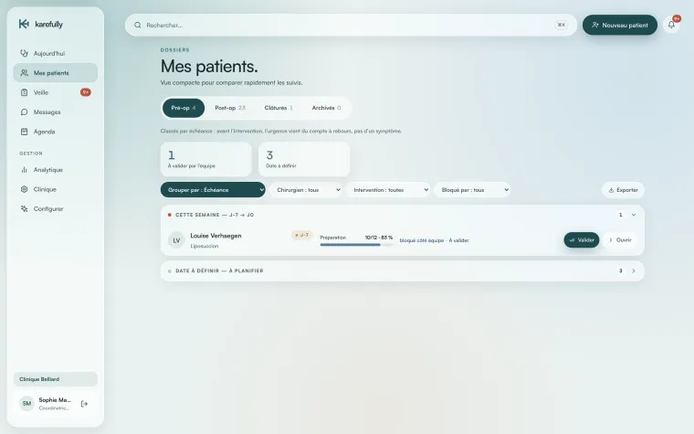
Suivi péri-opératoire · Chirurgie & médecine esthétique
L'application péri-opératoire des chirurgiens plasticiens et des cliniques esthétiques. De la préparation à la récupération, Karefully organise le parcours de vos patients et vous montre, en un coup d'œil, quels dossiers demandent votre attention aujourd'hui.
Gratuit pendant la phase pilote · Sans engagement · Sans carte bancaire
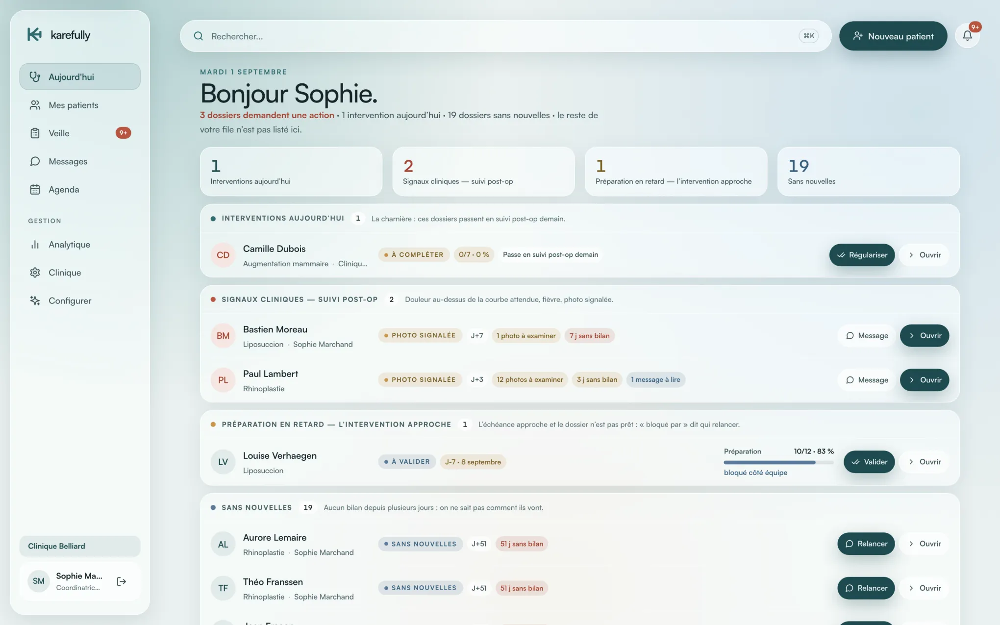
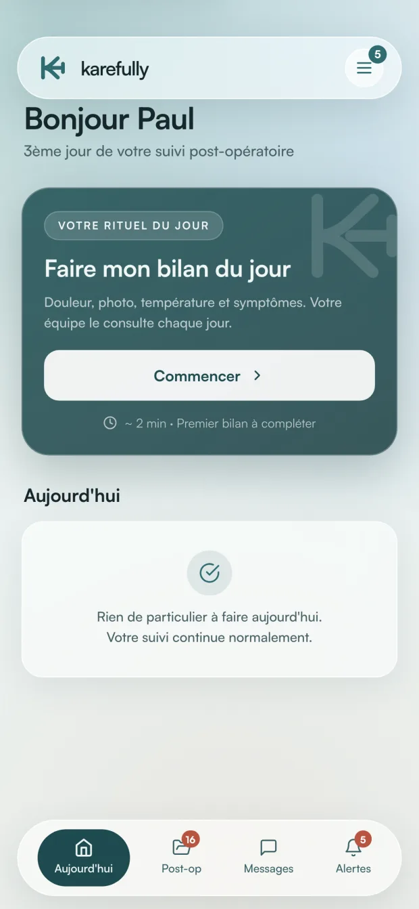
Programme pilote
Karefully est en phase de lancement. Nous ouvrons la plateforme à un nombre limité de cliniques pilotes : accès complet gratuit, mise en route accompagnée, et un canal direct avec l'équipe qui construit le produit.
Appels et messages répétés des patients inquiets.
Suivi éclaté entre WhatsApp, e-mails et téléphone.
Dossiers pré-op incomplets découverts au dernier moment.
Aucune visibilité sur les patients qui ne donnent pas de nouvelles.

Vos patients méritent mieux qu'un groupe WhatsApp. Votre équipe aussi.
Comment ça marche
1 · Avant l'intervention
Questionnaire, documents et checklist guidés côté patient ; état de préparation de chaque dossier côté équipe.

2 · Le jour J
Le dossier passe en suivi post-opératoire tout seul, consignes du jour comprises. Rien à dupliquer, rien à oublier.
3 · Après l'intervention
Bilan quotidien (douleur, température, photo, symptômes), et une file du jour qui priorise selon vos critères.
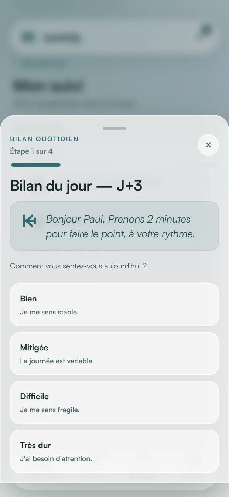
Côté équipe
Interventions du jour, réponses de patients à examiner, préparations en retard, patients sans nouvelles : votre file du matin, sans fouiller dans les dossiers.
Priorise votre liste selon les réponses que vos patients déclarent — selon vos critères, validés par vous.
Courbe de douleur jour par jour comparée à la courbe attendue, dernier bilan avec vos seuils en regard, photos, notes d'équipe, feuille de route.
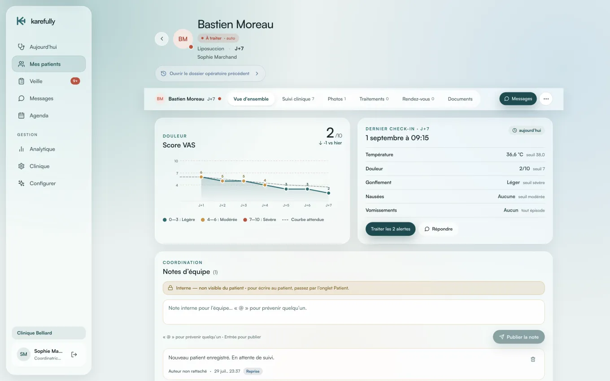
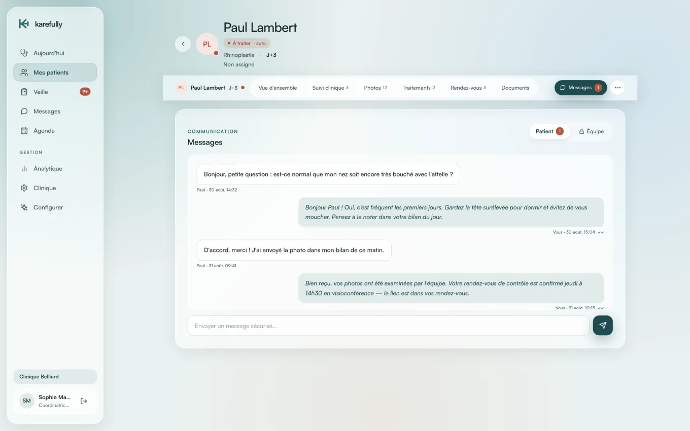
Les échanges patients centralisés, visibles de toute l'équipe, hors WhatsApp.
Toute l'équipe, un seul dossier
Karefully regroupe les interactions du chirurgien, de l'infirmier·ère responsable du suivi et de l'anesthésiste sur un seul dossier : un contrôle complet du pré-opératoire et du post-opératoire du patient, sans fil de discussion parallèle.
Chacun accède à ce que son rôle prévoit, et personne ne redemande au patient ce qu'il a déjà renseigné.
Patients suivis, complétion des tâches, tendance de douleur moyenne, répartition par statut.
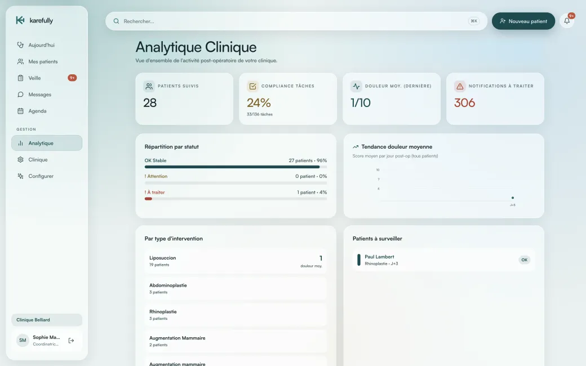
Consultations et interventions, reliées directement aux dossiers patients.
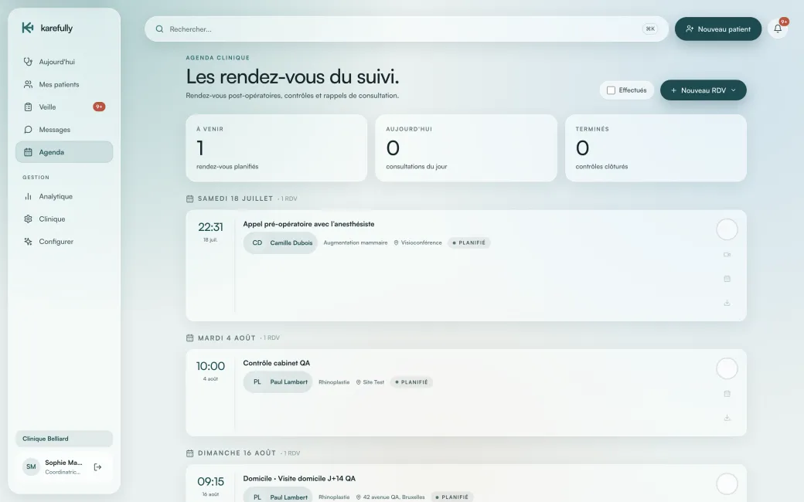
Côté patient
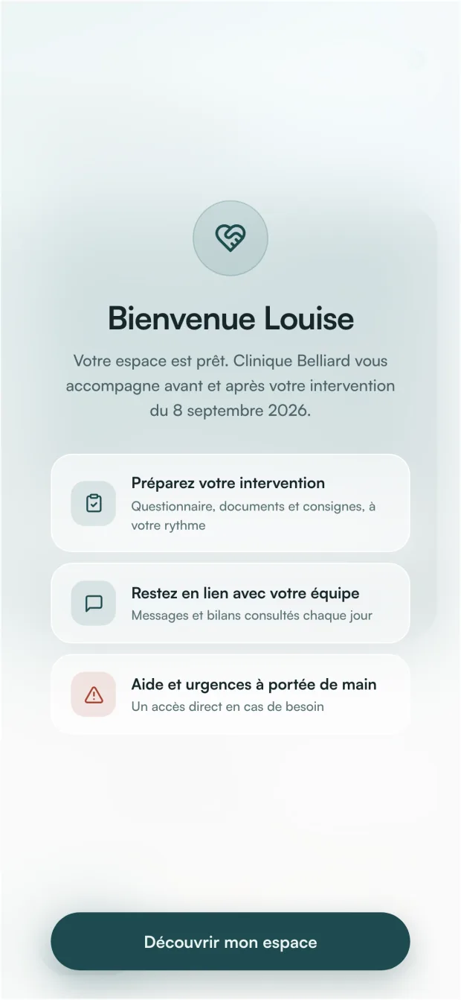
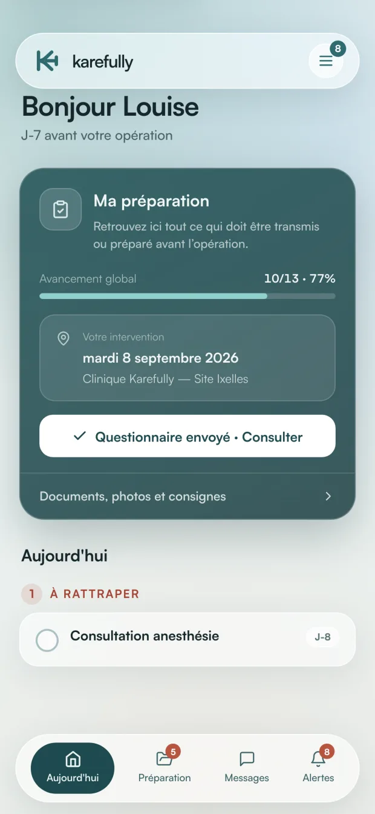
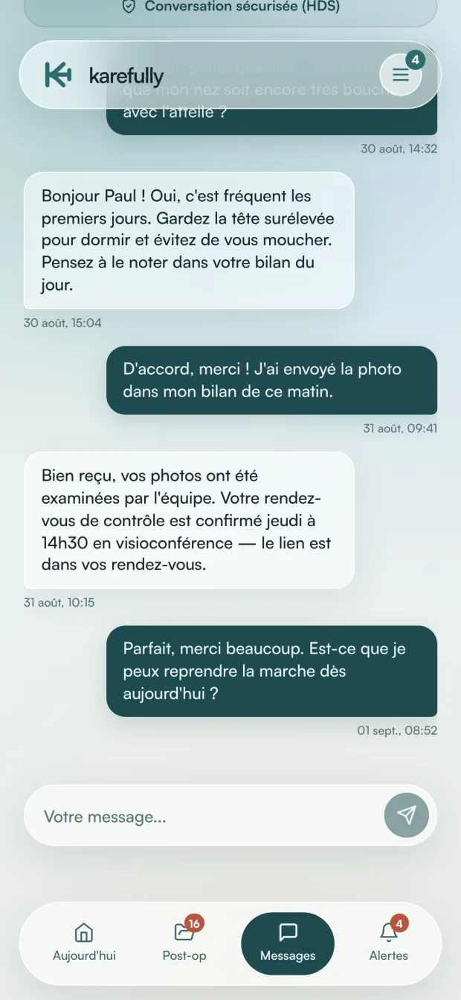
Votre équipe consulte vos réponses chaque jour. Toutes vos instructions au même endroit.
Pour qui
Vous êtes seul à porter le suivi de vos patients — et seul à répondre au téléphone le dimanche.
Plusieurs praticiens, plusieurs sites, et un suivi qui ne doit dépendre de personne en particulier.
Vos critères, vos protocoles
Karefully n'impose aucun seuil : vous définissez et validez vous-même les critères qui classent un dossier « À surveiller » (douleur, température, absence de réponse…), protocole par protocole. Chaque validation est historisée. Le patient classé « À surveiller » affiche toujours quel critère l'a déclenché — et l'évaluation clinique reste, à chaque instant, la vôtre.
Sécurité & conformité
Hébergeur certifié HDS.
Données en UE, jamais revendues.
Chacun ne voit que ce qu'il doit voir.
Fini les données médicales sur WhatsApp.
Karefully est un outil d'organisation et de communication. Il ne réalise aucune interprétation clinique, aucun diagnostic et aucune détection automatisée de complication : l'évaluation clinique appartient au praticien.
FAQ
Non. Karefully est un outil d'organisation et de communication : il collecte les auto-évaluations déclarées par les patients et les présente à l'équipe selon des critères de priorisation définis et validés par le chirurgien. Il ne réalise aucune interprétation clinique, aucun diagnostic et aucune détection automatisée de complication.
Aux deux. Karefully est une application péri-opératoire pensée pour les chirurgiens plasticiens en pratique indépendante comme pour les cliniques de chirurgie et de médecine esthétique. Le fonctionnement est identique : ce sont le nombre de dossiers, le nombre de sites et les rôles attribués qui changent. Un praticien seul démarre en autonomie ; une clinique ouvre des accès à toute son équipe.
En pratique indépendante, c'est vous qui recevez les appels du soir et du week-end, et vous seul qui portez le suivi. Le bilan quotidien vous donne l'état déclaré de chaque patient avant qu'il ne vous sollicite, et vos consignes pré et post-opératoires s'affichent au patient le bon jour sans que vous ayez à les répéter. Vous mettez l'application en route vous-même, sans comité d'achat ni service informatique, vous gardez la main sur vos protocoles et vos critères, et ceux-ci vous suivent si vous opérez dans plusieurs structures.
Chaque membre — chirurgien, infirmier·ère responsable du suivi, anesthésiste, secrétariat, direction — accède aux dossiers selon son rôle. La file du jour est partagée : le suivi continue quand un praticien est au bloc ou en congé, et les échanges avec le patient restent visibles de toute l'équipe plutôt que dans un téléphone personnel. Une clinique multi-sites pilote l'ensemble depuis un seul compte, avec des protocoles harmonisés entre praticiens et une vue consolidée de l'activité.
En France, chez un hébergeur certifié HDS (Hébergeur de Données de Santé), en conformité avec le RGPD.
Karefully est gratuit pendant la phase pilote, sans carte bancaire. La tarification sera annoncée au lancement commercial ; les cliniques pilotes bénéficieront de conditions préférentielles.
Moins de 30 minutes : les protocoles sont pré-configurés par intervention, ajustables à votre pratique, et l'onboarding est accompagné par notre équipe.
Non. Karefully fonctionne dans le navigateur : le patient reçoit un lien d'invitation et son bilan quotidien prend environ 2 minutes.
Il apparaît dans « Sans nouvelles » avec une relance en un clic — vous savez toujours qui n'a pas donné signe de vie.
Uniquement l'équipe de votre clinique, selon des rôles définis (chirurgien, infirmière, secrétariat…). Le patient n'accède qu'à son propre espace.
Oui : feuilles de route, consignes, documents et critères de priorisation sont paramétrables par intervention.
L'interface équipe et le portail patient sont disponibles en français et en anglais.
Aucun engagement : vous restez libres, et vos données vous appartiennent (export possible).
20 minutes en visio suffisent pour voir si Karefully colle à votre pratique.
Réserver directement un créneauOu écrivez-nous : hello@karefully-app.com
Réponse sous 24 h ouvrées.